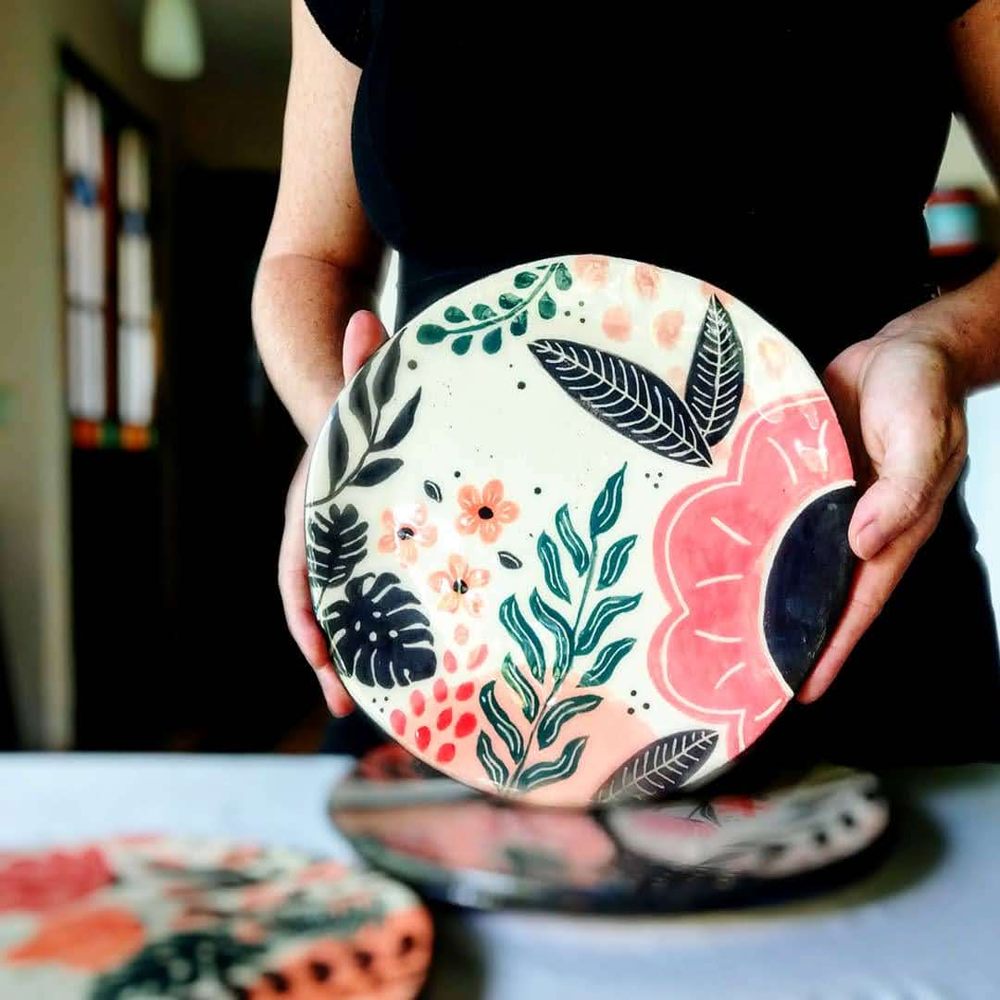
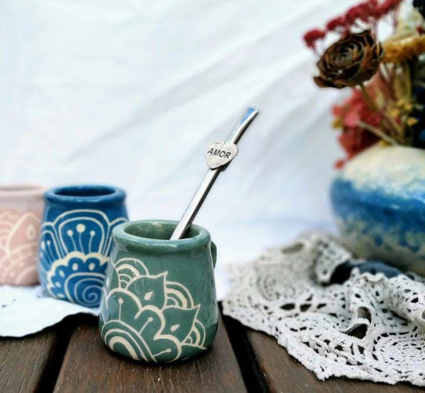

PODEMOS HACER LAS PIEZAS MÁS PERDURABLES
teniendo en cuenta las siguientes recomendaciones:

- Fueron horneadas varias veces a altas temperaturas (1080°-1230°) por lo que resisten el calor, más NO se exponen al fuego directo, ya sea de la hornalla de la cocina, del carbón de la parrilla o de horno a leña.
- Son aptas horno (eléctrico o a gas) siempre que reciban calor progresivamente (no horno precalentdo), también son seguras en el microondas (excepto las que tienen lustre oro, ya que tiene metal en su composición)
- Es importante que sepas que las piezas pueden llegar a craquelar con el tiempo, y si bien esto no afecta su uso, podés hacer algo al respecto: Evitar el Choque térmico (cambios bruscos de temperatura que repercuten en el esmalte y lo cuartean.) Si está caliente, apoyá sobre madera o tela y no sobre una mesada fría, porque la pieza puede quebrarse.
- Pueden ir al lavavajillas, pero si me preguntás, te recomiendo lavarlas a mano, ¿Cómo? Con esponja suave, agua tibia y detergente líquido, no laves con líquidos astringentes como lavandina. Secar a temperatura ambiente y guardar bien seco.
- No las dejes sumergidas en agua mucho tiempo, lo ideal es lavar al terminar de usar.
- Al vaciar tu mate cuando terminás de usarlo, no darle golpecitos con la bombilla. Es una costumbre que muchos tenemos para terminar de sacar la yerba usada y eso genera micro rajaduras en su interior que lo van debilitando lentamente.
- Si adquiriste una vela de soja y querés reutilizar el contenedor, lavalo con agua caliente y retirá el porta pabilo.
Como toda vajilla la cerámica es frágil a los golpes, manipular con cuidado! Dales mucho ♥️
BENEFICIOS DE ELEGIR
CERÁMICA PARA TU HOGAR

- Usando cerámica tenés un material perdurable y disminuís el consumo de plástico.
- Conserva el calor y el frío de las preparaciones por más tiempo.
- La cerámica esmaltada no toma olores de la comida o bebida que utilices, por eso es ideal para el uso diario.
- Son antiadherentes. No necesitas usar agregados como aceite para despegar preparaciones.
¡Muchas Gracias por leerme!
Mica